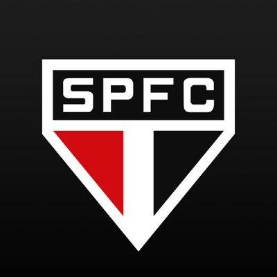
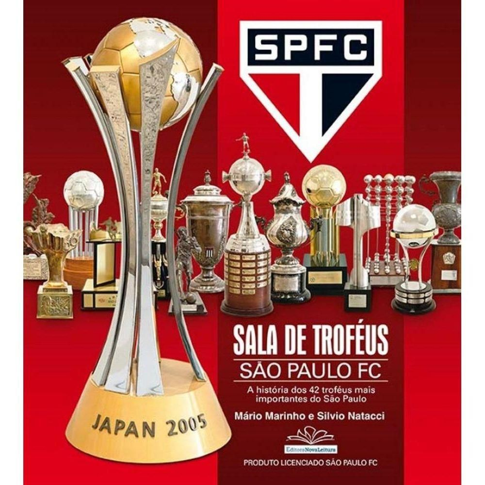

São Paulo Futebol Clube. O tricolor paulista surgiu através da fusão de dois antigos clubes: o Paulistano, grande campeão no início do século XX e a Associação Atlética das Palmeiras, que se uniram em 1930 dando origem ao Clube Athlético São Paulo ou São Paulo da Floresta, como muitos o chamavam.

o São paulo Futebol Clube atualamente tem 44 titulos sendos eles:
22 Campeonatos Paulistas: 1931, 1943, 1945, 1946, 1948, 1949,
1953, 1957, 1970, 1971, 1975, 1980, 1991, 1992, 1998, 2000, 2002,
2005 e 2021;
1 Torneio Rio-São Paulo: 2001;
1 Copa do Brasil: 2023;
6 Campeonatos Brasileiros: 1977, 1986, 1991, 2006, 2007 e 2008;
1 Supercopa da Libertadores: 1993;
2 Recopas Sulamericanas: 1993 e 1994;
1 Copa Conmebol: 1994;
3 Mundiais de Clubes: 1992, 1993 e 2005;
3 Copas Libertadores: 1992, 1993 e 2005;
1 Copa Sul-Americana: 2012;
1 Supercopa do Brasil: 2024.
1 Torneio Rio-São Paulo: 2001;
1 Copa do Brasil: 2023;
6 Campeonatos Brasileiros: 1977, 1986, 1991, 2006, 2007 e 2008;
1 Supercopa da Libertadores: 1993;
2 Recopas Sulamericanas: 1993 e 1994;
1 Copa Conmebol: 1994;
3 Mundiais de Clubes: 1992, 1993 e 2005;
3 Copas Libertadores: 1992, 1993 e 2005;
1 Copa Sul-Americana: 2012;
1 Supercopa do Brasil: 2024.